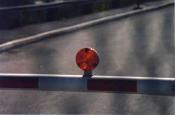

Bromma Bromma
The airport lies slightly north of Stockholm City, although well within the urban area. Here, garden suburbs mix in with small industrial areas in a pattern standardized 50 years ago. Public transport to Bromma is kind of funky: first take the subway and then find the hidden bus stop and jump aboard the good old 110 which will take you straight to liftoff. Or, rather, after about half an hour of slow progress among the residential districs, picking up aged members of society who moved here in an age when it was considered a good idea to live near a big airport. The state of public transport tells us a good deal about what we are about to enter: a remote area, a redundant part of the communal cityspace.
Near the airport, the ground that probably held big hangars in the good old days now harbours a big array of supermarkets. A plain of parking lots make up the perimeter area towards the airport. I get off the bus one stop earlier, just to be able to approach the airport on Shanks's pony. On the left hand side of the road is a big map, marking out the different areas.

The security seems to be intense: flashing lights, bars and iron nets guard the sacred grounds of Bromma airport. Later, when I take photos in the main hall, I am approached by a guard asking me why I'm taking photos. I explain that it's for an artwork, and ask if there's some prohibition against shooting here. He says no, and asks if I am here for the architecture; I say yes, and he says "They're all here for the architecture!" and walks away. I wish I had said what was really on my mind: "I'm here to catch yo' big ol' stoopid Norse face in its natural environment".
The main hall is not very big. The upper part of the walls are windows made of stained plexiglass that once was the height of fashion. The windows give the hall an eerie lighting; time seems more stagnant than ever. The grey, filtered light shines down on the obscure travel agencies, the closed shops and exchange counters.
A defunct touch-screen ticket vending machine has a central placement in the hall. Close by there's a crowd of cabdrivers, and as I pass them I hear them discussing mafia-related crime. There's a few travel agencies and a dining area. But the thing that catches my eye is the small shop in one of the corners of the building.
The resident kiosk hawks interesting goodies, like spray paint against robbery and a multitude of security gizmos - the world outside Sweden is known to be extremely dangerous.
Multicolored pilot eyewear from the heyday of aviation are also for sale. As I browse the small shop I notice that the customers belong to one of two different tribes; the businessmen here to take a domestic flight, and aged overweight aviation buffs. Both types are drawn to the shop by the effective shop window display: a model of a human head wearing a pilot's intercom unit as well as the sturdy glasses which seem to be the shop's main item and pride. I wonder, though, what do the business men actually do with the eyewear: do they put them on and ask to be let into the cockpit later on their flight, or are they just souvenirs of a past age? The aviation buffs walk around with their glasses hangin' loose round their necks at all times.
After a while I think it's time for a dump so I locate the john, and to my delight, the toilet sports a dispenser for protective toilet-ring sheets, and not only that, the dispenser is well stocked. I thought toilet-ring protection sheets were officially discontinued in the mid-80's. So I happily pull one out, sit down, and enjoy the anachronistic vibes, so characteristic of the Bromma airport.
-Joel Westerberg